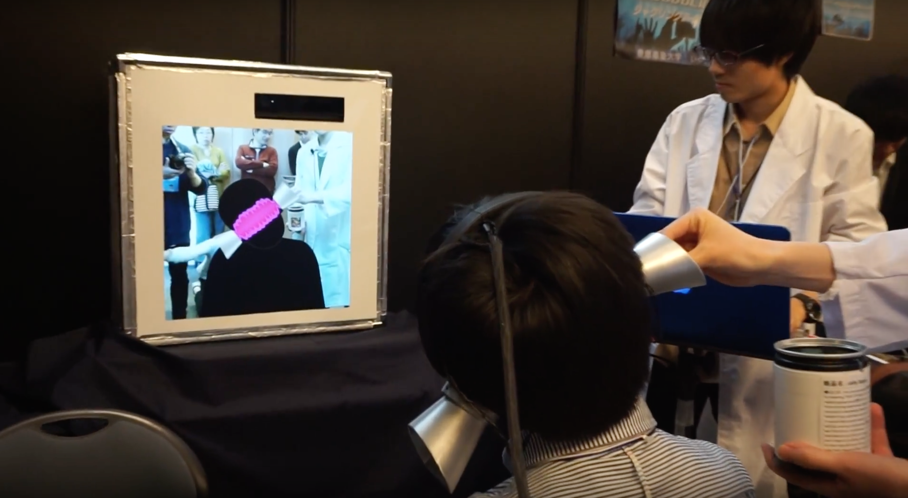

About
- 
- 「ミミトンネル〜あなたの耳、貫通させます〜」は、耳の穴が貫通したときのワクワク感やスリルを体験することができるVRコンテンツです。
- 体験者は、ディスプレイに映る自分のシルエットを見ながら音声を聴くことにより、耳の穴が貫通してジェリービーンズや牛乳、虫などが頭の中を通っているような感覚を体験できます。また、頭を傾けることで頭の中のモノをインタラクティブに移動させることができます。
- この作品は、イヤホンから流す音声の左右の音量バランスを変化させるというシンプルな仕組みで、音像の知覚位置を移動させています。また、イヤホンに音声に合わせた振動を与えることにより、耳元でのゾクゾク感を増幅させています。
Video
- Demo Video
Exhibitions
- 2016年9月15-16日 第24回学生対抗バーチャルリアリティコンテスト予選大会 （予選１位通過）
- 2016年10月29-30日 第24回学生対抗バーチャルリアリティコンテスト決勝大会（日本VR学会賞受賞）
Links
- IVRC2016 Final Stage PV｜29-30th Oct 2016 #IVRC
- IVRC2016 Awards ceremony
People
- 明治大学総合数理学部先端メディアサイエンス学科
- 猪塚美帆/佐竹澪/三輪聡哉/池田夏子/大場洋哉/田澤美智子